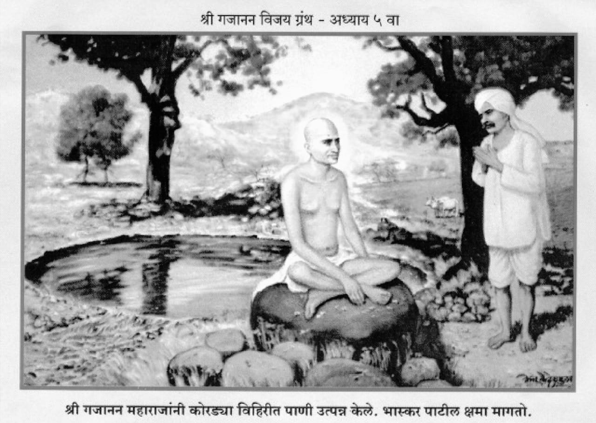

॥ अध्याय ५॥

॥ श्रीगणेशाय नमः ॥
हे अज अजित अद्वया ।
सच्चिदानंदा करुणालया ।
दासगणू लागला पायां ।
आतां अभय असूं दे ॥१॥
मी हीन दीन पातकी नर ।
नाहीं कोणता अधिकार ।
सर्व बाजूंनीं लाचार ।
आहें मी देव देवा ॥२॥
परी अत्यंत हीनावरी ।
थोर सर्वदा कृपा करी ।
पाहा अंगीं लाविली खरी ।
विभूति श्रीशंकरानें ॥३॥
तो हीनांचा हीनपणा ।
थोरा न आणि कमीपणा ।
हें जाणोन नारायणा ।
गणू हा ठेवा संग्रहीं ॥४॥
सर्व लाड लेंकराचे ।
माता ती पुरवि साचे ।
आहे दासगणूचें ।
ओझें सर्व तुझ्या शिरीं ॥५॥
जैसें करशील तैसें करी ।
परी दया असूं दे अंतरीं ।
देवा तुझ्या बळावरी ।
दासगणूच्या सार्या उडया ॥६॥
गजानन असतां शेगांवीं ।
यात्रा येई नित्य नवी ।
ती कोठवरी वर्णावी ? ।
पार न लागे तियेचा ॥७॥
महिमा तो वाढला फार ।
म्हणून गजानन साधुवर ।
ती उपाधी करण्या दूर ।
भटकूं लागले काननीं ॥८॥
महिना महिना तिकडेच राहावें ।
वाटेल तेथेंच बैसावें ।
कोणाशीं न उमगूं द्यावें ।
चरित्र आपुलें येतुलेंही ॥९॥
श्रोते एका समयासी ।
महाराज पिंपळगांवासी ।
गेले तेथें गोष्ट कैसी ।
झाली ते अवधारा ॥१०॥
त्या पिंपळगांवच्या शिवारांत ।
होतें एक अरण्यांत ।
शंकराचें मंदिर सत्य ।
जुनें पुराणें हेमाडपंती ॥११॥
ऐशा त्या मंदिरीं ।
येते झाले साक्षात्कारी ।
बैसले शिवाच्या गाभारीं ।
लावोनिया पद्मासन ॥१२॥
गुराखी त्या गांवचे ।
आपापले कळप गुरांचे ।
घेऊनिया निघाले साचे ।
अस्तमानीं गांवाकडे ॥१३॥
मंदिरापुढें तत्त्वतां ।
एक लहान ओढा होता ।
तेथें पाणी पाजण्याकरितां ।
गुरें गुराखी पातले ॥१४॥
कोणी सहज मंदिरांत ।
गेले वंदण्या शिवाप्रत ।
तों तेथें पाहोन समर्थ ।
आश्चर्यचकित जाहले ॥१५॥
मुलें म्हणती या मंदिरीं ।
कोणी न पाहिला आजवरी ।
पुरुष बसलेला निर्धारी ।
अस्तमानाचे समयाला ॥१६॥
कांहीं गुराखी बाहेर आले ।
इतरां बोलावूं लागले ।
कांहीं तेथेंच बैसले ।
सत्पुरुषाचे समोर ॥१७॥
परी साधु बोलेना ।
डोळे मुळींच उघडीना ।
याचें कारण कळेना ।
त्या गुराखी अर्भकांसी ॥१८॥
कोणी म्हणती थकलेला ।
हा साधु दिसतो भला ।
शक्ति मुळीं नुरली त्याला ।
बोलावयाकारणें ॥१९॥
कोणी म्हणती उपवासी ।
असावा निश्चयेसी ।
थोडी भाकर तयासी ।
देऊं आपण खावया ॥२०॥
ऐसें म्हणून भाकर ।
धरली मुखासमोर ।
भाविक मुळचीं गुराखी पोरें ।
हलवूं लागलीं समर्थाला ॥२१॥
परी साधु हालेना ।
मुखीं शब्द बोलेना ।
म्हणून सार्या गुराख्यांना ।
नवल वाटलें विशेष ॥२२॥
गुराखी आपसांत बोलती ।
याची मुळीं ना कळे स्थिती ।
जरी मेला म्हणावा निश्चिती ।
तरी आहे बसलेला ॥२३॥
अंग ना झालें थंडगार ।
ऊन आहे साचार ।
यावरुन हा जिवंत नर ।
आहे आहे शंका नको ॥२४॥
कोणी म्हणे असेल भूत ।
मायावी रुप दावित ।
कोणी म्हणे हें तर सत्य ।
शिवापुढें ना भूत येई ॥२५॥
कोणी म्हणती स्वर्गीचा ।
देव हा असावा साचा ।
लाभ त्याच्या दर्शनाचा ।
झाला आपणां हेंच भाग्य ॥२६॥
याचें आतां पूजन ।
करुं अवघे आपण ।
जा स्नानालागून ।
पाणी आणा ओढयाचें ॥२७॥
पोरें गेलीं ओढयावरी ।
गेळ्यामध्यें आणिलें वारी ।
परमभावें पायांवरी ।
घालिते झाले समर्थांच्या ॥२८॥
कोणी वन्यपुष्पें आणिलीं ।
माळ त्यांची तयार केली ।
कंठामध्यें घातिली ।
गुराख्यांनीं साधूच्या ॥२९॥
कोणी कांदाभाकर ।
नैवेद्यार्थ साचार ।
दिली ठेवून समोर ।
एका वडाच्या पानावरी ॥३०॥
गुराख्यांनीं केलें नमन ।
आदरें भाव धरुन ।
कांहीं वेळ केलें भजन ।
पुढें बसून समर्थांच्या ॥३१॥
ऐसा आनंद चालला ।
तों गुराखी एक बोलला ।
अरे वेळ बहु झाला।
चला आतां गांवाकडे ॥३२॥
दिवस गेला मावळून ।
कां न आलीं रानांतून ।
मुलें गुरांना घेऊन ।
ऐसें लोक म्हणतील कीं ॥३३॥
कदाचित् आपणांसी ।
पाहण्या येतील काननासी ।
तान्ही वांसरें घरांसी ।
लागलीं असतील हुंबरावया ॥३४॥
या साधूची हकीकत ।
आपण सांगूं गांवांत ।
शहाण्या वडील माणसांप्रत ।
म्हणजे येईल कळून कीं ॥३५॥
तें अवघ्यांसी मानवलें ।
गुराखी सर्व निघून गेले ।
गांवामाजीं कळविलें ।
मंदिराचें अवघे वृत्त ॥३६॥
पुढें श्रोते प्रातःकाळीं ।
आली गांवची मंडळी ।
समर्थांसी पाहाण्या भली ।
गुराख्यांच्या बरोबर ॥३७॥
जैसा काल होता बसला ।
तैसाच आतां पाहिला ।
भाकरीसी ना स्पर्श केला ।
ती जशीच्या तशीच आहे कीं ॥३८॥
म्हणूं लागले गांवकरी ।
हा योगी पुरुष कोणी तरी ।
आहे बैसला मंदिरीं ।
सांप्रत या शंकराच्या ॥३९॥
कोणी ऐसें बोलले ।
शिव पिंडीच्या बाहेर आले ।
आपणां दर्शन द्याया भले ।
चला नेऊं या गांवांत ॥४०॥
हा समाधी उतरील ।
तेव्हां कांहीं बोलेल ।
ती उतरण्या आहे वेळ ।
त्याला त्रास देऊं नका ॥४१॥
बंगाल देशीं जालंदर ।
बारा वर्षें झाले स्थिर ।
समाधीच्या जोरावर ।
गर्तेमाजीं ख्यात हें ॥४२॥
ऐसी भवति न भवति झाली ।
एक पालखी आणविली ।
त्यांत उचलून ठेविली ।
समर्थांची मूर्ति पाहा ॥४३॥
ग्रामांतील नारीनर ।
अवघे होते बरोबर ।
पुढें वाजंत्र्यांचा गजर ।
होत होता विबुध हो ! ॥४४॥
मधून मधून तुळशीफुलें ।
पौर टाकीत होते भले ।
समर्थाचें अंग झालें ।
गुलालानें लाली लाल ॥४५॥
घंटाघडयाळें वाजती ।
लोक अवघे भजन करिती ।
जय जय योगिराज मूर्ति ।
ऐसें उंच स्वरानें ॥४६॥
मिरवणूक आली गांवांत ।
मारुतीच्या मंदिरांत ।
बसविले आणून सद्गुरुनाथ ।
एका भव्य पाटावरी ॥४७॥
तोही दिवस तैसाच गेला ।
मग लोकांनीं विचार केला ।
आपण करुं स्तवनाला ।
उपाशी बसून याच्यापुढें ॥४८॥
ऐसा जो तो विचार करिती ।
तों आले देहावरती ।
गजानन श्रीसद्गुरुमूर्ति ।
मुगुटमणी योग्यांचे ॥४९॥
मग काय विचारतां ।
आनंद झाला समस्तां ।
प्रत्येक स्त्रीपुरुष ठेवी माथा ।
स्वामीचिया चरणांवरी ॥५०॥
नैवेद्याची धूम झाली ।
ज्यानें त्यानें आणिलीं ।
पात्रें तीं वाढून भलीं ।
मारुतीच्या मंदिरांत ॥५१॥
त्या अवघ्यांचा स्वीकार ।
समर्थें केला थोडाफार ।
हाळोपाळींत साचार ।
ही वार्ता श्रुत झाली ॥५२॥
पुढें दुसर्या मंगळवारीं ।
पिंपळगांवचे गांवकरी ।
आले बाजारा निर्धारीं ।
शेगांवाकारणें ॥५३॥
ते शेगांवच्या लोकांसी ।
सहज बोलले प्रेमेसी ।
आमच्याही गांवासी ।
आला एक अवलिया ॥५४॥
अवलिया थोर अधिकारी ।
प्रत्यक्ष आहे श्रीहरी ।
धन्य पिंपळगांव नगरी ।
पाय लागले साधूचे ॥५५॥
आम्ही तया योगीवरा ।
कोठें न जाऊं देऊं खरा ।
निधि चालत आला घरा ।
त्यातें कोण दवडी हो ? ॥५६॥
शेगांवचे बाजारांत ।
जिकडे तिकडे हीच मात ।
बंकटलाला झालें श्रुत ।
वर्तमान तें अवलियाचें ॥५७॥
बंकटलाल पत्नीसहित ।
गेला पिंपळगांवांत ।
समर्थासी जोडोन हात ।
विनवूं लागला नानापरी ॥५८॥
आतां येतो म्हणून ।
निघून गेलात आपण ।
त्यास झाले पंधरा दिन ।
याचा विचार करा हो ॥५९॥
गुरुराया तुम्हांवीण ।
भणभणीत दिसे सदन ।
शेगांवचे अवघे जन ।
चिंतातुर झाले हो ॥६०॥
गाडी आणिली आपणांसाठीं ।
चला शेगांवीं ज्ञानजेठी ।
मायलेका होणें तुटी ।
हें कांहीं बरें नसे ॥६१॥
कित्येक दयाळा आपुले भक्त ।
राहिले असती उपोषित ।
त्या शेगांव शहरांत ।
नित्य दर्शन घेणारे ॥६२॥
म्ही न आल्या शेगांवीं ।
मी ही तनु त्यागीन वरवी ।
आमुची सांगा पुरवावी ।
आळ कोणी गुरुवर्या ? ॥६३॥
बंकटलाल ऐसें वदले ।
महाराज गाडीवरी बसले ।
शेगांवासी निघाले ।
पिंपळगांवा सोडून ॥६४॥
जैसा मागें गोकुळाला ।
न्याया कृष्णा अक्रूर आला ।
तैसा बंकटलाल भासला ।
अक्रूर पिंपळगांवातें ॥६५॥
पिंपळगांवच्या लोकांप्रती ।
बंकटलाल समजाविती ।
नका होऊं दुःखित चित्तीं ।
जाती न कोठें लांब साधु ॥६६॥
वाटेल तेव्हां दर्शना यावें ।
हेतु आपुले पुरवावे ।
जेथल्या तेथें असूं द्यावें ।
या अमोल मूर्तीला ॥६७॥
बहुतेक पिंपळगांवाचा ।
बंकटलाल साहुकार साचा ।
मनोभंग साहूचा ।
करण्या कुळांची छाती नसे ॥६८॥
चुरमुर्याचे लाडू खात ।
पिंपळगांव बसलें स्वस्थ ।
महाराज बसून गाडींत ।
जाऊं लागले शेगांवा ॥६९॥
पथीं जातां गुरुमूर्ति ।
बोलली बंकटलालाप्रती ।
ही का साहूची होय रीति ।
माल दुसर्याचा बळें न्यावा ! ॥७०॥
मशी यावया तुझ्या घरीं ।
भय वाटतें अंतरीं ।
तुझ्या घरचि नाहीं बरी ।
रीत हें मी पाहतों ॥७१॥
लक्ष्मी जी लोकमाता ।
महाविष्णूची होय कांता ।
जिची असे अगाध सत्ता ।
तिलाही त्वां कोंडिलें ॥७२॥
तेथें माझा पाड कोण ? ।
म्हणून गेलों पळोन ।
जगदंबेचे पाहून ।
हाल माझें चित्त भ्यालें ॥७३॥
ऐसें ऐकतां हंसूं आलें ।
बंकटलालाप्रती भलें ।
विनयानें भाषण केलें ।
तें ऐका सावचित्तें ॥७४॥
बंकट बोले गुरुनाथा ।
माझ्या कुलपा न भ्याली माता ।
आपुला वास तेथें होता ।
म्हणून झाली स्थीर ती ॥७५॥
जेथें बाळ तेथें आई ।
तेथें दुज्याचा पाड काई ? ।
आपुल्या पायापुढें नाहीं ।
मला धनाची किंमत ॥७६॥
तेंच माझें धन थोर ।
म्हणून आलों इथवर ।
माझें न उरलें आतां घर ।
तें सर्वस्वीं आपुलें ॥७७॥
घरमालकाकारण ।
शिपाई आडवी कोठून ? ।
जैसें तुमचें इच्छील मन ।
तैसेंच तुम्ही वागावें ॥७८॥
इतकीच माझी विनंती ।
शेगांवीं असो वस्ती ।
धेनू काननातें जाती ।
परी येती घरीं पुन्हां ॥७९॥
तसेंच तुम्हीं करावें ।
अवघ्या जगां उद्धरावें ।
परी आम्हां न विसरावें ।
शेगांवीं यावें वरचेवर ॥८०॥
ऐसी समजूत घालून ।
शेगांवीं आणले गजानन ।
तेथें कांहीं दिवस राहून ।
निघून गेले पुनरपि ॥८१॥
ती ऐकावी तुम्ही कथा ।
सांगतों मी इथें आतां।
अडगांव नामें ग्राम होता ।
एक तया वर्हाड प्रांतीं ॥८२॥
त्या ग्रामाकारण ।
जाया निघाले दयाघन ।
प्रातःकाळीं चुकवून ।
नजर शेगांवकरांची ॥८३॥
महाराजांची चालगती ।
वायुचिया समान होती ।
अंजनी-तनय मारुती ।
आला काय वाटे पुन्हां ॥८४॥
मास होता वैशाख ।
सोळा कलांनीं तपे अर्क ।
क्वचित् कोठें न राहिलें उदक ।
ऐसा प्रखर उन्हाळा ॥८५॥
माध्यान्हीच्या समयाला ।
अकोली गांवापासी आला ।
हा योगयोगेश्वर साधु भला ।
गजानन महाराज ॥८६॥
तों काय घडलें वर्तमान ।
समर्थांसी लागली तहान ।
करिती चौफेर अवलोकन ।
तों उदक कोठें दिसेना ॥८७॥
अंगावाटे चालल्या धारा ।
घामाच्या त्या एकसरा ।
अधरोष्ठ तो सुकला खरा ।
उदकाविण समर्थांचा ॥८८॥
ऐशा दुपारच्या अवसरीं ।
भास्कर नामें शेतकरी ।
घालीत होता पाळी खरी ।
आपुल्या त्या शेताला ॥८९॥
शेतकर्याची पाहतां स्थिति ।
हें अवघ्यांत मुख्य असती ।
कृषीवल हा निश्चिती ।
अन्नदाता जगाचा ॥९०॥
अंगीं ऐसें मोठेंपण ।
परी सोशी यातना दारुण ।
बिचार्यांना ऊन ताहान ।
सोसणें भाग असे कीं ॥९१॥
त्या अकोलीच्या शिवारांत ।
जलाचें दुर्भिक्ष्य अत्यंत ।
एक वेळा मिळेल घृत ।
परि अभाव पाण्याचा ॥९२॥
आपणांतें प्यावयासी ।
भास्करानें शेतासी ।
आणिलें खापराच्या घागरीसी ।
उदक होतें गांवांतून ॥९३॥
पाठीसी ती भाकर ।
डोईं जलाची घागर ।
ऐसा होता प्रकार ।
शेतामाजीं येण्याचा ॥९४॥
ती घागर झुडुपाखालीं ।
होती भास्करें ठेविली ।
त्या ठिकाणीं स्वारी आली ।
भास्करा जल मागावया ॥९५॥
समर्थ म्हणती भास्कराला ।
तहान लागली मला ।
पाणी दे बा प्यावयाला ।
नाहीं ऐसें म्हणूं नको ॥९६॥
पुण्य पाणी पाजण्याचें ।
आहे बापा थोर साचें ।
पाण्यावांचून प्राणाचें ।
रक्षण होणें अशक्य ॥९७॥
धनिक पाणपोया घालिती ।
हमरस्त्याच्या पथावरती ।
याचें कारण शोध चित्तीं ।
म्हणजे येईल कळोन ॥९८॥
भास्कर बोले त्यावर ।
तूं नंगा धूत दिगंबर ।
तुला दांडग्या पाजितां नीर ।
पुण्यलाभ कशाचा ? ॥९९॥
अनाथ-पंगू-दुबळ्यांसाठीं ।
त्या पुण्याच्या शोभती गोष्टी ।
वा जो समाजहितासाठीं ।
झटे त्यासी साह्य करा ॥१००॥
ऐसें शास्त्राचें आहे वचन ।
तुझ्यासारख्या मैंदाकारण ।
आम्ही पाजितां जीवन ।
तें उलटें पाप होय ॥१॥
भूतदयेच्या तत्त्वें भला ।
सर्प कोणी कां पोसला ? ।
वा जागा चोरटयाला ।
देती सदनीं काय कोणी ? ॥२॥
तूं भीक मागून घरोघर ।
केलेंस पुष्ट शरीर ।
भारभूत साचार ।
झालास आपुल्या कृतीनें ॥३॥
मीं माझ्यासाठीं घागर ।
आणिली सकाळीं डोक्यावर ।
त्या आयत्या पिठावर ।
रेघोटया तूं ओढूं नको ॥४॥
तुला ना देणार पाणी ।
नको करुं रे विनवणी ।
जा जा करी येथोनी ।
काळें आपलें चांडाळा ॥५॥
तुझ्यासारिखे निरुद्योगी ।
जन्मले आमच्यांत जागजागीं ।
म्हणून झालों अभागी ।
आम्ही चहूं खंडांत ॥६॥
हें भास्कराचें भाषण ।
समर्थांनीं ऐकून ।
थोडें करुनी हास्यवदन ।
निघोन गेले तेथोनिया ॥७॥
थोडया दूर अंतरावर ।
एक होती साच विहीर ।
तिकडे धांव अखेर ।
घेतली स्वामीरायांनीं ॥८॥
स्वामी तिकडे जाऊं लागतां ।
भास्कर झाला बोलतां ।
उच्च स्वरें वेडया वृथा ।
तिकडे कशाला जातोस ? ॥९॥
ती कोरडी ठणठणीत ।
आहे विहीर जाण सत्य ।
पाणी या एक कोसांत ।
नाहीं कोठें जाण पिशा ॥११०॥
समर्थ बोलले त्यावरी ।
ही सत्य तुझी वैखरी ।
विहिरींत पाणी नाहीं जरी ।
परी करितों प्रयत्न ॥११॥
तुझ्यासारखे बुद्धिमान ।
जलनिं होती हैराण ।
तें मी नयनीं पाहून ।
स्वस्थ ऐसा बसलों जरी ॥१२॥
तरी समाजहितासाठीं ।
काय मी केली सांग गोष्टी ।
साह्य होतो जगजेठी ।
हेतु शुद्ध असल्यावर ॥१३॥
समर्थ आले विहिरीपाशीं ।
तों थेंब नाहीं तियेशीं ।
हताश होऊन वृक्षापाशीं ।
बसले एका दगडावर ॥१४॥
डोळे मिटून केलें ध्यान ।
चित्तीं सांठविला नारायण ।
जो सच्चिदानंद दयाघन ।
दीनोद्धार जगद्गुरु ॥१५॥
समर्थ म्हणती देवदेवा ।
हे वामना वासुदेवा ।
प्रद्युम्ना राघवा ।
हे विठ्ठला नरहरी ! ॥१६॥
देवा ही आकोली ।
पाण्यावांचून त्रस्त झाली ।
वोलही ना राहिली ।
कोठेंच देवा विहिरींतून ॥१७॥
मानवी यत्न अवघे हरिले ।
म्हणून तुजला प्रार्थिलें ।
पाव आतां जगन्माउले ।
पानी दे या विहिरीला ॥१८॥
तुझी करणी अघटीत ।
जें न घडें तें घडविसी सत्य ।
मांजरें जळत्या आव्यांत ।
पांडुरंगा ! तूं रक्षिलीं ॥१९॥
प्रल्हाद भक्त करण्या खरा ।
स्तंभीं प्रगटलास जगदोद्धारा ।
बारा गांव वैश्वानरा ।
भक्षिलें त्वां गोकुळांत ॥१२०॥
कर नखाग्रीं धरिला गिरी ।
तूंच कीं रे मुरारी ।
तुझ्या कृपेची न ये सरी ।
जगत्रयीं कवणास ॥२१॥
दामाजीपंत ठाणेदार ।
त्याच्यासाठीं झालास महार ।
चोख्यासाठीं ओढीलीं ढोरं ।
पांखरें रक्षिलीं माळ्याचीं ॥२२॥
उपमन्यूसाठीं भला ।
क्षीरसमुद्र तुवां दिला ।
तहान नामदेवाला ।
मारवाडांत लागली जैं ॥२३॥
तैं तुम्ही कौतुक केलें ।
निर्जलता प्रांतीं भलें ।
नाम्यासाठीं भरविलें ।
जल हें आण ध्यानांत ॥२४॥
ऐसें विनवितां ईश्वरा ।
विहिरीलागीं फुटला झरा ।
उफाळ्याचा साजिरा ।
विहीर भरली क्षणामध्यें ॥२५॥
साह्य झाल्या जगन्नाथ ।
काय एक ना तें होत ।
ईश्वरी सत्ता अगाध सत्य ।
जें ना घडे तेंच घडवी ॥२६॥
तेथ पाणी समर्थ प्याले ।
तें भास्करानें पाहिलें ।
चित्त त्याचें घोटाळलें ।
कांहीं नच चाले तर्क त्याचा ॥२७॥
वर्षें झालीं द्वादश ।
जल नाहीं या विहिरीस ।
तिलाच एका घटकेस ।
यानें जलमय केली कीं ॥२८॥
यावरुन हा कोणीतरी ।
खचित आहे साक्षात्कारी ।
बळेंच फिरतो पिशापरी ।
हें आतां समजलें ॥२९॥
शेतीचें काम सोडून ।
भास्कर आला धांवून ।
धरितां झाला दृढ चरण ।
मुखें स्तोत्र आरंभिलें ॥१३०॥
हे नरदेहधारी परमेश्वरा ।
हे दयेच्या सागरा ।
लेंकरासी कृपा करा ।
अर्भक मी तुमचें असें ॥३१॥
तुम्हांतें ना जाणून ।
मी बोललों टाकून ।
आतां पस्तावा झाला पूर्ण ।
क्षमा त्याची करा हो ॥३२॥
टाकून बोलतां गौळणी ।
रागावला ना चक्रपाणी ।
दयाळा बाह्य वेषांनीं ।
तुझ्या मजला ठकविलें ॥३३॥
त्याचें तूंच निरसन ।
केलें चमत्कार दाखवून ।
भगवंताचें देवपण ।
कृतीनेंच कळलें कीं ॥३४॥
तैसा तुझा अधिकार ।
केवढा तरी आहे थोर ।
तें कळलें साचार ।
या जलाच्या कृतीनें ॥३५॥
कांहीं असो सद्गुरुनाथा ।
मी न सोडी तुम्हां आतां ।
लेंकरानें भेटतां ।
माये कोठें न रहावें कीं ॥३६॥
खोटी ही प्रपंच माया ।
आले आज कळोनिया ।
आतां परते न लोटा या ।
दीना अर्भकाकारणें ॥३७॥
भास्करासी समर्थ म्हणती ।
ऐसा न होई दुःखित चित्तीं ।
आतां घागर डोक्यावरती ।
गांवांतून आणूं नको ॥३८॥
तुझ्यासाठीं हें जीवन ।
विहिरींत केलें निर्माण ।
आतां कशाची नुरली वाण ।
मग का प्रपंच टाकिशी ? ॥३९॥
पाणी आलें तुझ्याकरितां ।
बगीचा तो लाव आतां ।
भास्कर म्हणे गुरुनाथा ।
हें आमीष दावूं नका ॥१४०॥
माझा निश्चय हीच विहीर ।
कोरडी ठणठणीत साचार ।
होती दयाळा आजवर ।
थेंब नव्हता पाण्याचा ॥४१॥
ती विहीर फोडण्याला ।
तुम्हीच हा प्रयत्न केला ।
साक्षात्काराचा लाविला ।
सुरुंग खडक फोडावया ॥४२॥
तेणें हा फुटला खडक ।
भावाचें लागलें उदक ।
आतां मला निःशंक ।
भक्तिपंथाचा लावीन मी ॥४३॥
वृत्तीच्या मेदिनी ठायीं ।
फळझाडें तीं लावीन पाही ।
सन्नीतीची माझे आई ।
तुझ्या कृपेंकरुन ॥४४॥
सत्कर्माचीं फुलझाडें ।
लावीन मी जिकडे तिकडे ।
हे क्षणैक बैलवाडे ।
यांचा संबंध आतां नको ॥४५॥
पहा श्रोते संतसंगति ।
क्षणैक घडतां भास्कराप्रती ।
केवढी झाली उपरति ।
याचा विचार करा हो ॥४६॥
खर्या संताचें दर्शन ।
आगळें सर्व साधनांहून ।
तुकारामें केलें वर्णन ।
"संतचरणरजा" चे अभंगीं ॥४७॥
तो अभंग पहावा ।
चित्तीं विचार करावा ।
आणि त्याचा अनुभव घ्यावा ।
निजहिताकारणें ॥४८॥
पाणी लागलें विहिरीस ।
ही वार्ता आसपास ।
पसरतां जन दर्शनास ।
धांवूं लागले स्वामीच्या ॥४९॥
मधूचा लागतां सुगावा ।
जैशा मक्षिका घेती धांवा ।
वा साखरेचा पाहून रवा ।
मुंग्या येती धांवून ॥१५०॥
तैसे श्रोते तेथ आले ।
लोक अपार मिळाले ।
विहिरीचें पाणी पाहिलें ।
पिऊन त्यांनीं तेधवां ॥५१॥
उदक निर्मळ शीत मधुर ।
गोड अमृताहून फार ।
करुं लागले जयजयकार ।
गजाननाचा लोक सारे ॥५२॥
असो पुढें भास्करासहित ।
अडगांवासी न जातां परत ।
महाराज आले शेगांवांत ।
श्रीगजानन सिद्धयोगी ॥५३॥
स्वस्ति श्रीदासगणूविरचित ।
हा गजाननविजय नामें ग्रंथ ।
होवो जगासी आदर्शभूत ।
संतमहिमा जाणावया ॥१५४॥
शुभं भवतु ॥ श्रीहरिहरार्पणमस्तु ॥
॥इति पंचमोऽध्यायः समाप्तः ॥